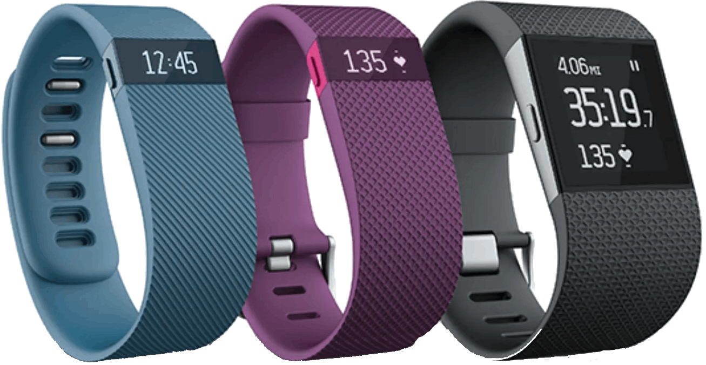

What
is Fitbit?



Fitbit is a fitness & healthy lifestyle-oriented company which produces health/activity trackers, also known as Fitbits. These Fitbits are smartwatches that allow the user to monitor physical activity while also providing them with information about their body like sleep time and steps taken. These devices utilise sensors to incorporate the roles of multiple devices (such as a pedometer and a heart rate monitor) into 1 wearable device on your wrist.
The company was seeing a rapid increase in its revenue as it increased from 5 million dollars to 2.17 billion dollars in the span of six years (2010 - 2016). However, after 2016 its revenue started to decline which may have been caused by rivalling companies also developing smartwatches and providing the same, if not similar, features that Fitbit’s gadgets have but at a cheaper price - one notable company could've been Xiaomi as their “Mi Band” devices had similar features to that of Fitbit’s but were sold at a cheaper price of around $30.

The company started under a different name - “Healthy Metrics Research Inc.” when it was founded by James Park (CEO) and Eric Friedman (CTO) in March 2007 but later in October of the same year, rebranded into the company we know “Fitbit Inc.”. Throughout the company's lifetime, they would acquire multiple valuable assets to their company such as a fitness app developer “Fitstar” in 2015 and in 2016, Fitbit bought a payment platform from Coin (a smart credit card company) to integrate into their products to not only make their gadgets more accustomed to future trends but to also assist in making people’s lives easier. Later in the same year, the company switched from being a “consumer electronics company” to a “digital healthcare company” as stated by the CEO.
Fitbit’s dashboard is written in Java for Android, Swift and Objective-C for IOS and C# for Windows. With this, the company has an API for developers to utilise and stylise their devices in their way, be it developing a new app for your Fitbit, such as a weather app to check future forecasts or developing a new theme (clock face) for your smartwatch to display the time or any activity details in a more technologically sophisticated or wacky way that you like. Fitbit also provides guides on how to develop these apps or clock faces on the Fitbit developer site, it also gives the developers a rundown on how the devices operate, how the dash works and even how you can utilise the sensors built into the device for your applications.
The company started under a different name - “Healthy Metrics Research Inc.” when it was founded by James Park (CEO) and Eric Friedman (CTO) in March 2007 but later in October of the same year, rebranded into the company we know “Fitbit Inc.”. Throughout the company's lifetime, they would acquire multiple valuable assets to their company such as a fitness app developer “Fitstar” in 2015 and in 2016, Fitbit bought a payment platform from Coin (a smart credit card company) to integrate into their products to not only make their gadgets more accustomed to future trends but to also assist in making people’s lives easier. Later in the same year, the company switched from being a “consumer electronics company” to a “digital healthcare company” as stated by the CEO.
Fitbit’s dashboard is written in Java for Android, Swift and Objective-C for IOS and C# for Windows. With this, the company has an API for developers to utilise and stylise their devices in their way, be it developing a new app for your Fitbit, such as a weather app to check future forecasts or developing a new theme (clock face) for your smartwatch to display the time or any activity details in a more technologically sophisticated or wacky way that you like. Fitbit also provides guides on how to develop these apps or clock faces on the Fitbit developer site, it also gives the developers a rundown on how the devices operate, how the dash works and even how you can utilise the sensors built into the device for your applications.
One of Fitbit’s newest devices - the Fitbit Charge 6 - is a direct upgrade of its previous model (you guessed it, the Fitbit Charge 5) as it carries over all its predecessor’s features; like the on-board GPS, AFib monitoring (monitoring unusual changes in your heartbeat) and sleep tracking, while also adding more features like the integration of Google Maps (which it is the first Fitbit device to do so) to tell you which direction you should be going to your destination, replacing Fitbit Pay with Google Pay and integrating with exercise machines. Although only some specific exercise machines can utilise this feature as the machines need to have a Bluetooth Heart Rate Profile, some notable gym equipment companies that this feature works on are NordicTrack, Peloton and Concept2 as revealed by Fitbit.
Alongside releasing Fitbit branded smartwatches, Fitbit works alongside Google (as it was bought by Google) to develop Google Pixel Watches, these watches can both be bought on the Google Store site and the Fitbit site. The Google Pixel Watch 2 accomplishes what its previous model couldn't, it provides a much faster processor, a longer battery life and more health sensors. The watch provides its users with an automatic workout detection feature and the build of the watch itself is made up of aluminium rather than stainless steel. Although this build change makes the watch lose some of its aesthetic, it makes that up with the watch being lighter making it more comfortable for the user to wear it. Another positive feature of the newer watch’s build is that the accessories are interchangeable between the 1st model and 2nd model.